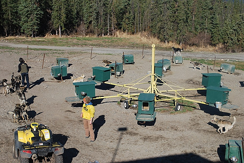

|

This was an odd training tool. The wheel-like structure gives dogs exercise making the wheel rotate, but if tired, they can hop on the platform and use the platform or dog house to lie down. The workers claimed the dogs loved to pull the wheel around and around, but I'm not sure that is true. |